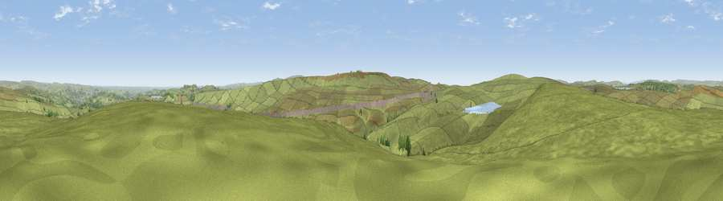

Dog Hill
#11727 in England · top 14% of its area beats it · near RippondenThe view, rendered

A 360° render of this exact spot computed from the terrain model, tree cover and land cover — summer colours, afternoon light, calibrated against photographs of famous viewpoints. Real trees, hedges and buildings will differ in detail.
The panorama
Grey silhouette: terrain skyline in each direction (720 bearings, Earth curvature and refraction included). Dashed green: skyline with trees (+15 m) and buildings (+8 m) as obstacles. Blue strip: how far the ground is visible on each bearing.
Where the view opens
Wedge length = distance to the farthest visible ground on that bearing (vegetation-aware). Rings at 10, 25 and 50 km.
What fills the view
94% grassland · 2% woodland · 2% built-up ·
Angular shares of the visible panorama (visual magnitude), not map area. Landscape diversity 0.12 (0–1 Shannon).
Key numbers
More beautiful places nearby
The staircase of upgrades: each row has a higher view potential than everything closer. Driving times are estimates from straight-line distance, calibrated against real road routing — check an actual route before setting out.
| Place | Direction | Drive | Score |
|---|---|---|---|
| Viewpoint near Timbercliffe | W · 3 km | ~7 min | 62.1 |
| Viewpoint near Timbercliffe | WSW · 3 km | ~8 min | 68.7 |
| Viewpoint near Denshaw | SSW · 8 km | ~16 min | 69.3 |
| Viewpoint near Marsden | SE · 9 km | ~18 min | 71.0 |
| Viewpoint near Shaw | SSW · 10 km | ~19 min | 72.9 |
| Viewpoint near Greenfield | S · 14 km | ~26 min | 76.0 |
| Viewpoint near Carrbrook | S · 17 km | ~30 min | 77.1 |
| Viewpoint near Edenfield | W · 18 km | ~31 min | 77.5 |
53.65021, -1.99688 · source: osm peak · position refined by local search. Computed location — check access rights before visiting.